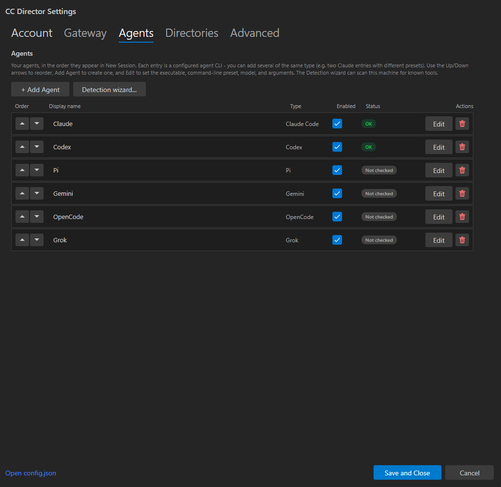
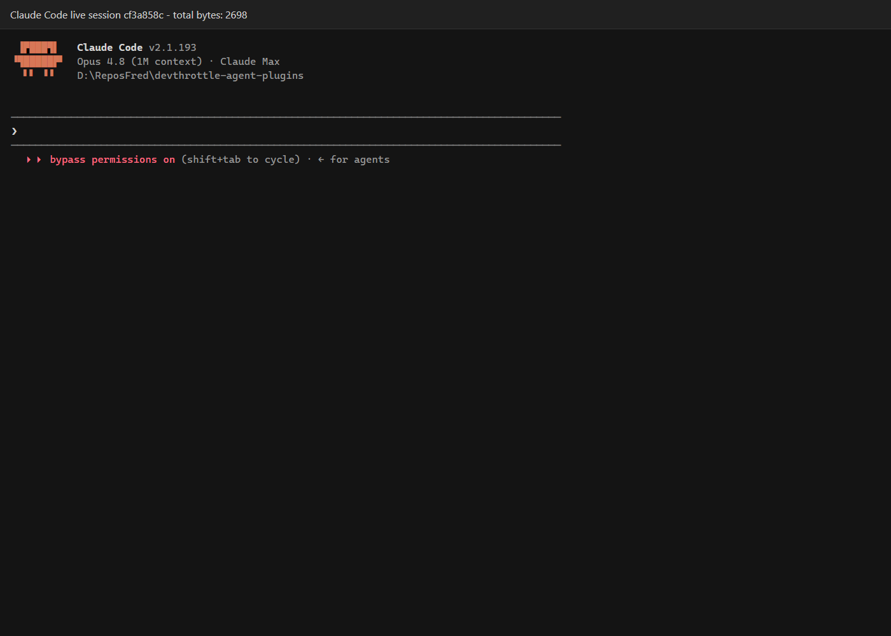

Status: PASS
Captured: 2026-06-26T06:31:16.0189678-04:00
ClaudeAgentPlugin as a concrete built-in plugin for Claude Code.ClaudeDriver, preserving slash commands, model selection, history, interrupt/cancel, and preassigned session behavior.AgentPluginRegistry now resolves AgentKind.ClaudeCode through ClaudeAgentPlugin.dotnet build cc-director.sln --no-restore - Build succeeded, 0 warnings, 0 errors.dotnet test src/CcDirector.Core.Tests/CcDirector.Core.Tests.csproj --no-build --filter "FullyQualifiedName~AgentPluginRegistryTests|FullyQualifiedName~ClaudeAgentDefaultArgsTests" - Passed: 20, Failed: 0.dotnet test src/CcDirector.Gateway.Tests/CcDirector.Gateway.Tests.csproj --no-build --filter FullyQualifiedName~AgentsEndpointTests - Passed: 18, Failed: 0.scripts\local-build-avalonia.ps1 -Slot 14.http://127.0.0.1:7882.cf3a858c-39a4-45e6-8627-543d8f4afb72.agent=ClaudeCode, activityState=WaitingForInput, statusColor=green, Claude transcript path under ~/.claude/projects, and capabilities including PreassignedSessionId, History, and ModelSelection.Claude Code settings list:

Live Claude Code terminal session:
